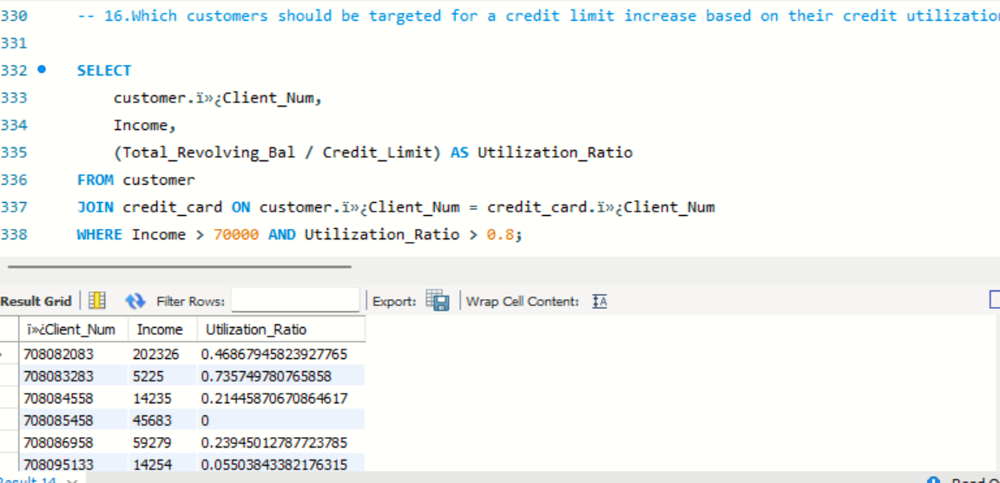
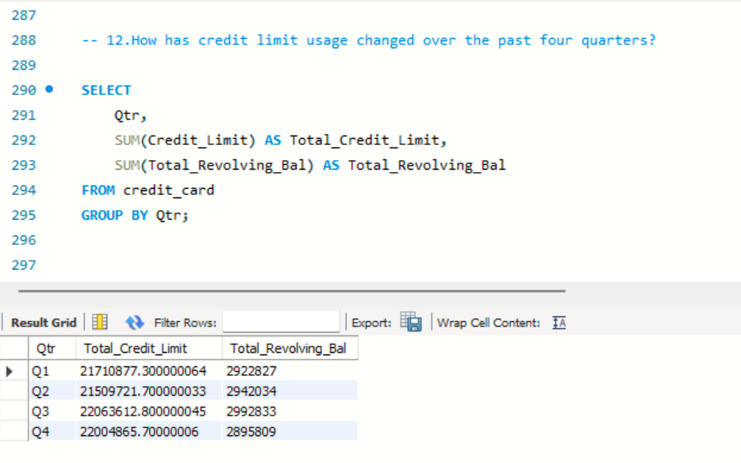

The primary objective of this project is to analyze and extract meaningful insights from customer and credit card data using MySQL. The project aims to: Understand customer behavior and preferences. Analyze credit card usage, transactions, and financial trends. Identify patterns in customer satisfaction, credit limit, income levels, and more. Provide actionable insights for business decision-making, such as marketing strategies, risk management, and customer segmentation.
MySQL: Primary relational database management system used to store, query, and analyze customer and credit card data.
Window Functions: Used for ranking, cumulative sums, averages, and other advanced calculations.
Common Table Expressions (CTEs): Simplify complex queries by organizing intermediate results.
Subqueries and Joins: Enable comparisons across multiple tables (customer and credit_card) for deeper insights.
Aggregations & Groupings: Key to summarize data and extract high-level metrics, such as averages, totals, and counts.
SQL Functions:
Ranking Functions: RANK(), DENSE_RANK(), NTILE()
Aggregation Functions: SUM(), AVG(), MAX(), MIN()
Partitioning & Ordering: To compare customers within specific groups or categories.
Customer Segmentation & Profiling: Analyze customer demographics (age, gender, education, income, etc.) to segment the customer base.
Identify high-value customers based on credit limit, transaction amounts, and satisfaction scores.
Credit Card Usage Analysis:
Track total transaction volumes and amounts for each customer.
Analyze credit utilization ratios and revolving balances.
Identify patterns in credit card activation and delinquency.
Financial Metrics and Ranking:
Rank customers based on total transactions, income, credit limit, and customer satisfaction score.
Compute averages and percentiles to compare individual customer metrics against overall or segmented groups.
Custom Financial Reporting:
Generate cumulative sums and averages for transaction amounts, revolving balances, and customer acquisition costs.
Create financial projections and identify trends in quarterly and annual spending behavior.
Improved Customer Understanding: Gained insights into customer demographics and preferences, allowing better-targeted marketing efforts and customer retention strategies. Identified high-value and high-risk customers based on their credit card usage, revolving balance, and transaction history. Enhanced Financial Decision-Making: Analyzed transaction patterns and credit utilization, aiding in risk management and revenue forecasting. Identified customers with delinquent accounts or underutilized credit cards for risk mitigation and engagement. Optimized Marketing Campaigns: Segmented customers based on income, education level, and satisfaction score, leading to personalized marketing campaigns. Targeted customers with high transaction volumes and credit limits for premium services and rewards programs. Better Resource Allocation: By analyzing acquisition costs and transaction behaviors, resources were reallocated towards the most profitable customer segments. Businesses can offer personalized financial products based on customer profiles, leading to improved customer satisfaction. Data-Driven Business Strategies: Generated financial projections based on cumulative customer acquisition costs and transaction volumes, aiding in business planning. Provided actionable insights into customer loyalty by correlating satisfaction scores with financial metrics like income and credit usage.